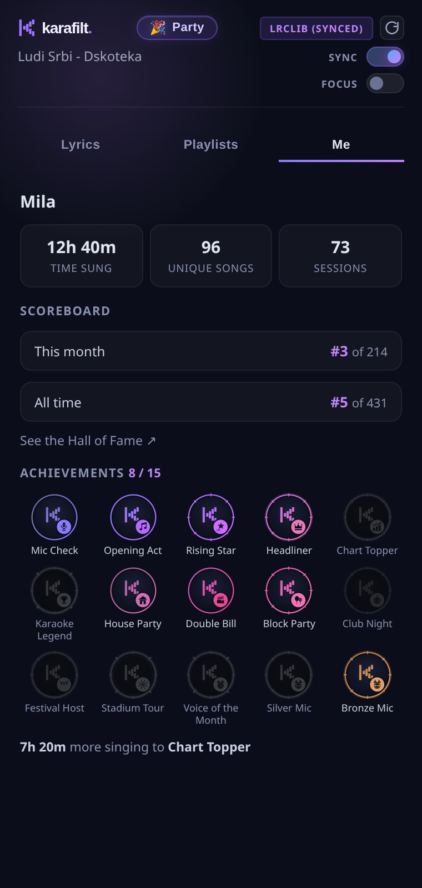

⏱️
Every minute counts
Time sung, unique songs and sessions add up automatically while you sing — no setup, no timers.
🏆
Climb the monthly scoreboard
See your rank against every Karafilt singer, this month and all-time. Top 3 win a podium badge every month.
🎖️
15 achievements to earn
From your first Mic Check to Karaoke Legend — the wall shows what you've earned and exactly how far the next badge is.
